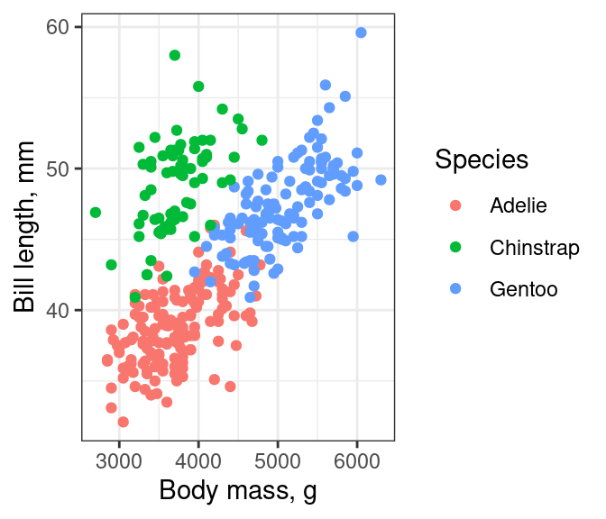
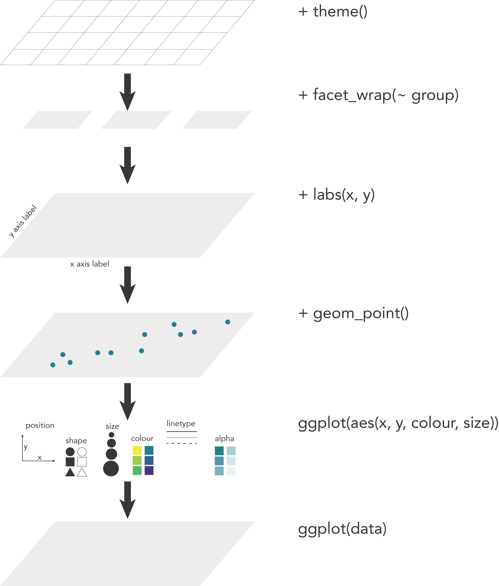
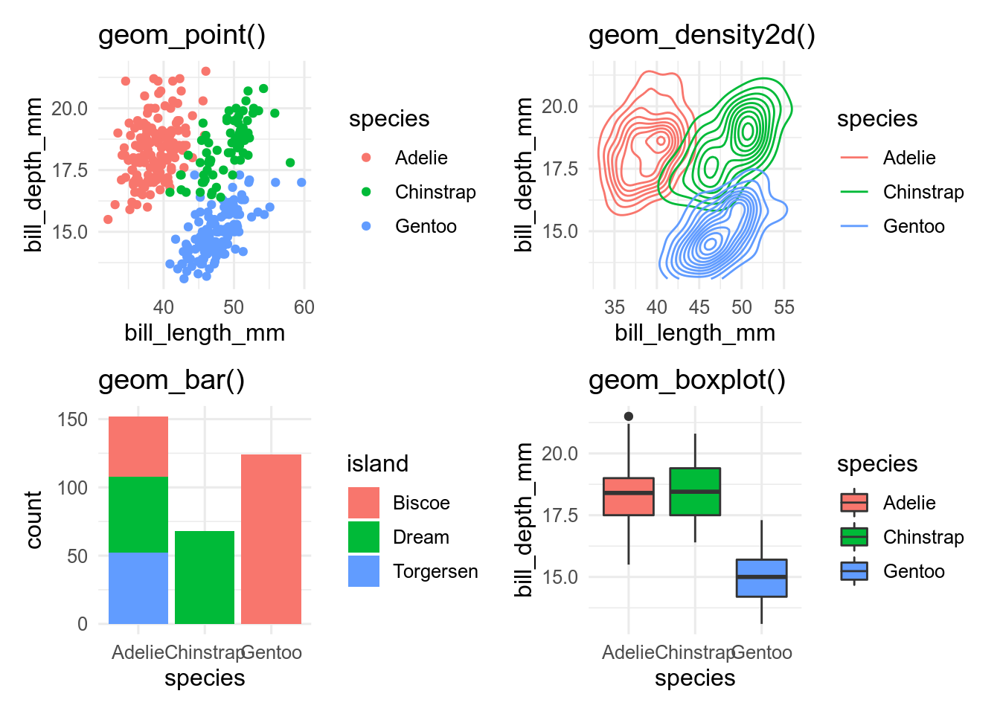
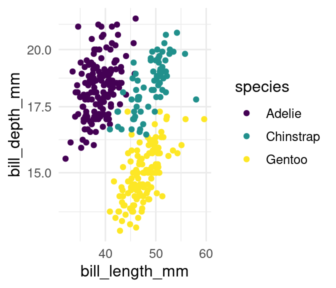
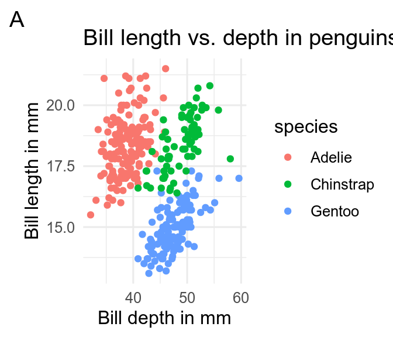
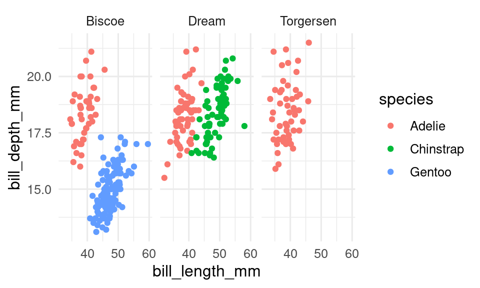
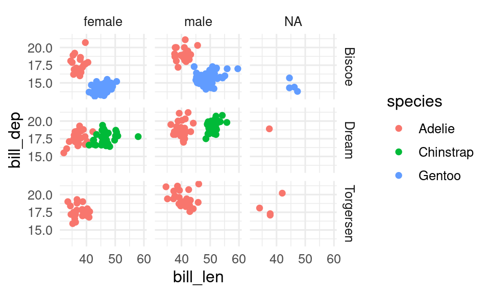
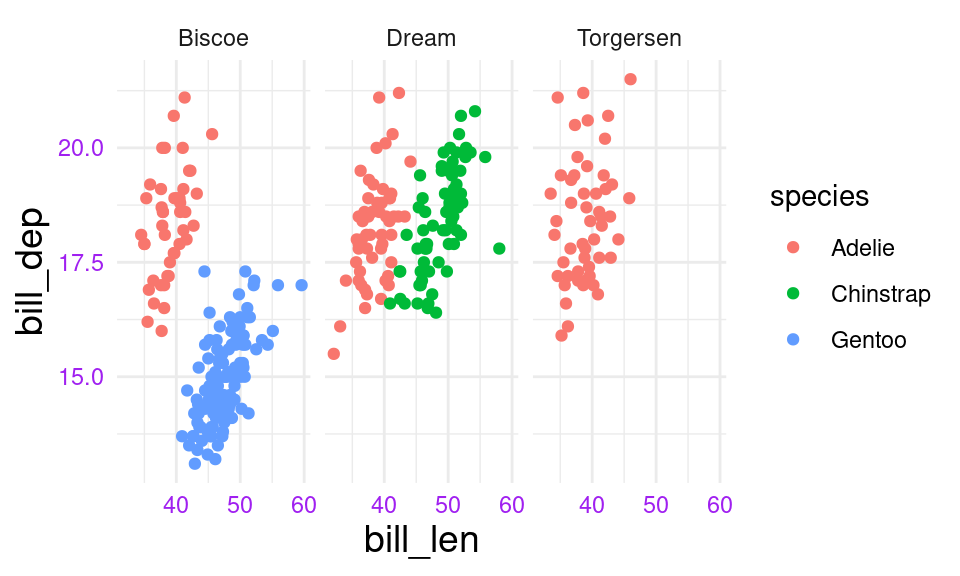
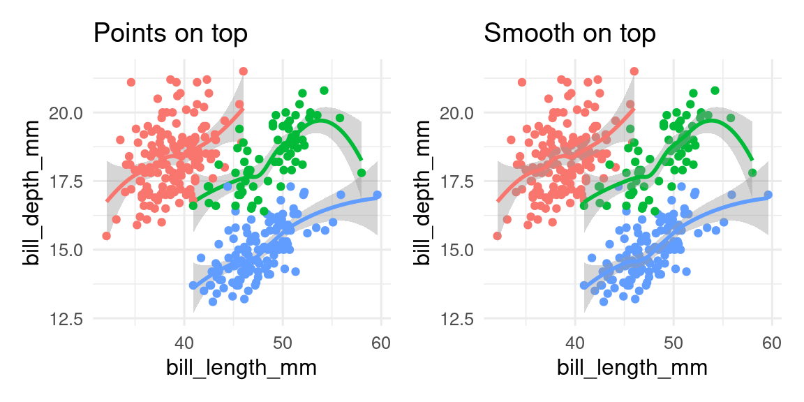

14 Getting started with ggplot
You need to be
- familiar with different types of data (continuous, categorical)
- able to handle tibbles
- know how to install a package
14.1 The ggplot2 package
ggplot2 is part of tidyverse so if you have already installed tidyverse, you already have ggplot2 installed. If not, see Section 5.6.2.
To activate ggplot2, you can use
But most of the time you should use library(tidyverse).
14.2 The basics
ggplot is based on the grammar of graphics, a terminology describing the components of a figure.
Let us have a look at these terms.
To produce a figure or plot, we take data values and use elements like dots, squares, lines, and colour to convert the data into a visual graphic. There are many different ways to make a figure, but there are some rules that apply in general. A plot is always built on data, and a number of other components called aesthetics, geometry and scales. These different components combined make up a figure.
14.3 The code
The code for to make a scatterplot with the penguins dataset from the palmerpenguins package looks something like this:
ggplot(data = penguins,
mapping = aes(x = body_mass_g, y = bill_length_mm, colour = species)) +
geom_point() +
labs(x = "Body mass, g", y = "Bill length, mm", colour = "Species") +
theme_bw()
The main function is ggplot() and is used to define the data and the aesthetics. The data is a data frame or tibble containing the variables to produce the figure. The mapping uses aes() to describe how the variables should be mapped onto the aestetics, such as x and y position or colour. Every other component of the plot is added with +. It makes the code easier to read if you put a new line after each + (the + must go at the end of a line, not at the start). These other elements include the graphical elements that display the data, usually created with a geom_*() function, labels created with labs(), and themes (Chapter 16) that change the non-data elements of the plot with themes().
You can think of it as different layers that are put on top of each other see Figure 14.1.

14.4 Building a ggplot figure
Now we will describe the different components a ggplot is made of.
14.4.1 Data
To make a figure we use the function ggplot(). The first argument in this function is for the data object containing all the variables that you need to make a figure. Generally, it is advisable to have the data in a long format (Chapter 10).
ggplot(data = penguins)
The ggplot function by itself will produce an empty plot.
14.4.2 Aesthetics
The second argument in the ggplot() function, mapping, is where we define the plot’s aesthetics with the function aes(). The different elements from the aesthetics are used to display the data. The most important element is the position which describes the location of the data on the plot, usually by x and y. Other important elements are shape, fill, size, colour and line type, which describe how the data is presented on the plot.
In the penguin example, if we want to plot the bill length against the bill depth, we choose these two variables as x and y. As a second aesthetic we have chosen to map species to colour.
One thing that might be confusing about the argument colour is that it only allows to be a variable, for example colour = species or colour = island. So for example colour = "red" does not work. If you want to choose a specific colour, this has to be done in geom or in scales (Section 17.1).
Now the ggplot function has added the x and y axis to the plot.
14.4.3 Geoms
To plot the actual data, you need a geom function. There are many different geom functions that you can choose. See Chapter 15 for an overview.
Here, we will use four different geoms to display aspects of the penguins data in different ways. The legend is automatically plotted on the right side when needed.
p1 <- ggplot(penguins, aes(x = bill_length_mm, y = bill_depth_mm, colour = species)) +
geom_point()
p2 <- ggplot(penguins, aes(x = bill_length_mm, y = bill_depth_mm, colour = species)) +
geom_density2d()
p3 <- ggplot(penguins, aes(x = species, fill = island)) +
geom_bar()
p4 <- ggplot(penguins, aes(x = species, y = bill_depth_mm, fill = species)) +
geom_boxplot()
p1
p2
p3
p4
- Make a histogram of the penguins bill length.
Hint
ggplot(data = ___, mapping = aes(x = ___)) +
geom____()- Make the histogram red.
Hint
ggplot(data = ___, mapping = aes(x = ___)) +
geom____(fill = "red")- Make a violin plot of the penguins bill length by species.
Hint
ggplot(data = ___, mapping = aes(x = ___, y = ___)) +
geom____()- Make a scatterplot of penguin bill length against flipper length.
Hint
ggplot(data = ___, mapping = aes(x = ___, y = ___)) +
geom____()- Make the points in the scatterplot different colours and shapes by species
Hint
ggplot(data = ___, mapping = aes(x = ___, y = ___, colour = ___, shape = ___)) +
geom____()14.4.4 Scales
Scales as the name says is for scaling, converting, inverting. With scales you can manipulate the labels, breaks, transformations and palettes. In other words you can manually change the axis text, labels, ticks, add breaks, make transformations, and manipulate aesthetics like colour, shape, linetype ( Chapter 17).
Here is just a small selection to show what is possible. We can log transform the y axis, change the axis titles, and change the colours.
ggplot(penguins, aes(x = bill_length_mm,
y = bill_depth_mm,
colour = species)) +
geom_point() +
scale_y_log10() +
scale_x_continuous() +
scale_color_viridis_d()
- Give your violin plot a colour-blind friendly fill.
Hint
ggplot(data = ___, mapping = aes(x = ___, y = ___, fill = ___)) +
geom____() +
scale________()14.4.5 Labs
labs() is a useful function to modify the axis labels, titles and legend.
The axis titles can be renamed, and a title and tag can be added.
ggplot(penguins, aes(x = bill_length_mm,
y = bill_depth_mm,
colour = species)) +
geom_point() +
labs(
x = "Bill length mm",
y = "Bill depth mm",
title = "Bill length vs. depth in penguins",
tag = "A")
Titles can be useful for presentations, but generally not useful for manuscripts, where you can put the information into the caption. Tags are useful when building a multipart figure (Chapter 19).
- Add axis & legend labels to your violin plot
Hint
violin_plot +
labs(x = ___, y = ___, fill = ___)14.4.6 Facets
Facets can be used to divide the data into different subplots, which can enhance readability of a figure.
In the next example, we use facet_wrap() to split the penguin data into 3 panels, one for each island.
ggplot(penguins, aes(x = bill_length_mm,
y = bill_depth_mm,
colour = species)) +
geom_point() +
facet_wrap(facets = vars(island))
If you want to split the data by two variables, facet_grid() can be useful.
ggplot(penguins, aes(x = bill_length_mm,
y = bill_depth_mm,
colour = species)) +
geom_point() +
facet_grid(rows = vars(island), cols = vars(sex))
- split your scatterplot into facets by sex.
Hint
scatter_plot +
facet_wrap(vars(___))14.4.7 Themes
Themes is a powerful element that controls the look of the plot. In themes you can change, remove and add the background, gridlines, ticks, text, text size and much more.
In our example, we will change the axis tile text size, the colour of the axis text and change the theme to theme_minimal().
See Chapter 16 for more about using themes.
ggplot(penguins, aes(x = bill_length_mm,
y = bill_depth_mm,
colour = species)) +
geom_point() +
facet_wrap(facets = vars(island)) +
theme_minimal() +
theme(axis.title = element_text(size = 14),
axis.text = element_text(colour = "purple"))
- Change the theme of your scatterplot
Hint
scatter_plot +
theme___()14.4.8 A ggplots are built with layers
As you can see, there are almost no limits to what you can do in a ggplot. The trick is to know which element changes what and to remember all the names (i.e. what is axis.text and axis.ticks etc.).
The order in which you code the different components of a plot often does not matter, except that the ggplot() needs to come first, and geoms are plotted in the order they are in the code. You can imagine the different components (geom, scale, stats) of the plot as different layers that are plotted on top of each other.
For example, you want to plot the data below and the smoother on top, and not the other way round.
points_on_top <- ggplot(penguins, aes(x = bill_length_mm,
y = bill_depth_mm,
colour = species)) +
geom_smooth() +
geom_point()
smooth_on_top <- ggplot(penguins, aes(x = bill_length_mm,
y = bill_depth_mm,
colour = species)) +
geom_point() +
geom_smooth()
points_on_top
smooth_on_top
- Make a boxplot of bill length by species on top of the jittered bill length data
Hint
ggplot(data = ___, mapping = aes(x = ___, y = ___)) +
geom____() +
geom____()14.5 Trouble shooting
In the beginning you will make mistakes which will result in error messages, warnings or incomplete plots. These mistakes often occur when one of the layers is missing, because a + is forgotten at the end of a line, due to a typo, or the data or other elements are forgotten.
To debug ggplot errors and other problems, we need to find where the error is. Run the first line (excluding with + at the end) and see what happens. If it does what you expect that line to run, then run the first two lines. You can also comment lines out (by putting a # in front of them). I recommend typing NULL on the line after the plot code so that if there is a extra + after removing a line, the plot won’t give a strange error by adding the next line of code.
ggplot(penguins, aes(x = species, y = bill_length_mm)) +
geom_violin() + # extra + after commenting out labs()
# labs(x = "Species", y = Bill length)
NULL #This will end the plot codeLet us look at some common mistakes and how the ggplot is displayed or not.
14.5.1 No data
If you forget to specify the data ggplot will not be able to make a plot and you will get the following error message:
ggplot(aes(x = bill_length_mm, y = bill_depth_mm, colour = species)) +
geom_point()Error in `fortify()`:
! `data` must be a <data.frame>, or an object coercible by `fortify()`,
not an S3 object with class <uneval>.
ℹ Did you accidentally pass `aes()` to the `data` argument?14.5.2 Missing aesthetics
If you forget to define the aesthetics aes() you will also get an error message and a empty image:
ggplot(data = penguins) +
geom_point()Error in `geom_point()`:
! Problem while setting up geom.
ℹ Error occurred in the 1st layer.
Caused by error in `compute_geom_1()`:
! `geom_point()` requires the following missing aesthetics: x and y14.5.3 Missing geometry
If the geometry is missing geom_point(), ggplot will draw a empty plot, with axis labels, but show not data, because you have not defined how to plot the data.
I make lots of mistakes and my plots don’t work. Please help me fix them.
ggplot(penguins, aes(x = bill_length, y = bill_depth)) |>
geom_point() +
labs(x = "Bill length", y = "Bill width")Hint
Use+ not pipes to add plot elements
ggplot(penguins, aes(x = bill_length, y = bill_depth))
+ geom_point()
+ labs(x = "Bill length", y = "Bill width")Hint
+ must be at the end of the line not the beginning
Why is this plot without colour?
ggplot(penguins, aes(x = bill_length, y = bill_depth, fill = species)) +
geom_point() +
scale_fill_viridis_c() +
labs(x = "Bill length", y = "Bill width")Hint
Make sure the aesthetic inaes() match the aesthetics in the scale_\*_\*() function. Also note that the c in scale_colour_viridis_c() is for a continuous scale. See the help file for how to change this.
Next, we will show the essential elements of a plot (title, axes, legend, …) and you can learn how to change and adapt each of these elements. Further you can learn the most common plots types that are commonly used (Chapter 15).
Contributors
- Aud Halbritter
- Richard Telford